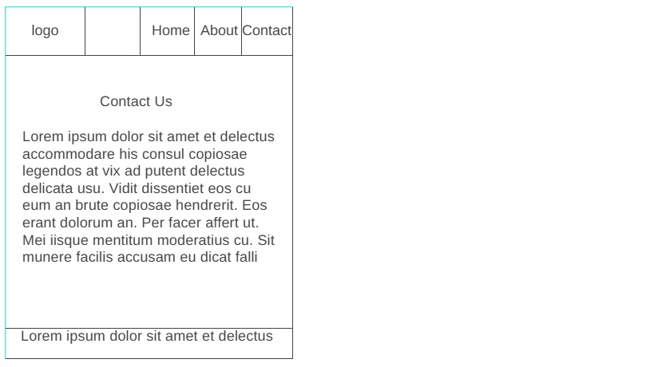

James-ann
Santa Monica Chamber of Commerce
This site is named after me for the aim of showcasing what I do as a forex trader.
Site Purpose
The purpose of this website is twofold:
- To provide a information about me.
- To provide visitors with information on how to be successful in forex trading.
Scenarios
Here are some common questions visitors may ask when visiting james-ann website:
- What upcoming events can I attend to network with other traders?
- How can I contact the James-ann to learn about trading opportunities?
- What resources are available for starting a trading carreer?
Color Schema
The selected color scheme will reflect the coastal and business-oriented atmosphere of James-ann:
- Primary Color: #0096D6 (Ocean Blue) - Used for headings, buttons, and navigation links.
- Secondary Color: #F1C40F (Golden Yellow) - Used for accent elements such as buttons,
links, and highlights.
Ocean Blue
Golden Yellow
Typography
The following fonts will be used throughout the website:
- Font 1: Roboto, sans-serif - Used for body text and general content.
- Font 2: Poppins, serif - Used for headings and subheadings.
Wireframe
Below are rough sketches of how the homepage layout would look in mobile and desktop views.
Wireframe Sketches:
